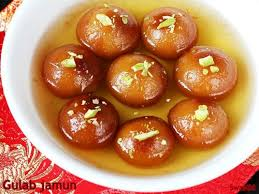
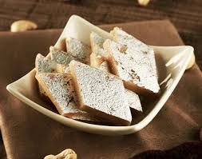

Gulab Jamun:
Ingredients:
- All-Purpose flour
- Ghee
- Milk
- Cardamom powder
- Rosewater
- Sugar
- Water
Recipe:
- Mix all-purpose flour, cardamom powder, and ghee, then add milk to form a smooth dough.
- Prepare sugar syrup by boiling sugar and water, then add rosewater and simmer for 5-7 minutes.
- Roll the dough into smooth balls and set aside.
- Fry the balls in hot ghee until golden brown, then soak in the sugar syrup for 15-20 minutes.

Kaju Katli:
Ingredients:
- Cashews
- Sugar
- Water
- Ghee
- Cardamom Powder
- Saffron strands
- Pistachios
Recipe:
- Grind cashews into a fine powder using a grinder.
- repare sugar syrup by heating sugar and water together until it reaches a one-thread consistency.
- Mix cashew powder into the syrup, cook on low flame, and add ghee and cardamom powder.
- Set the mixture in a greased tray, flatten it, garnish with saffron and pistachios, then let it cool before cutting into pieces.
